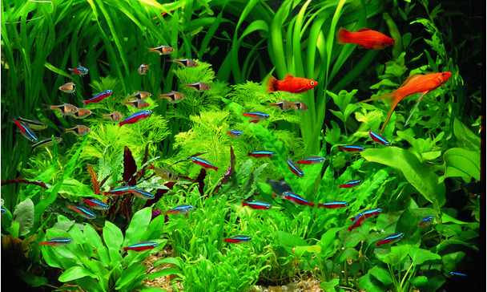

8 svarīgi padomi par akvārija kopšanu

Kā pareizi akvārijā mainīt ūdeni
Akvārijā katru nedēļu ir jānomaina tikai trešdaļa ūdens no visa tilpuma. Nekādā gadījumā nedrīkst visu
akvāriju
izjaukt un sastādīt no jauna, jo tas izjauks bioloģisko līdzsvaru – veidosies aļģes un citas problēmas.
Mainot
ūdeni, ļoti vēlams izmantot sifonu, kas ir nopērkams zoopreču veikalos vai arī izveidojams pašu spēkiem.
Tā ir
neliela piltuve, ar kuras palīdzību grunti attīra no zivju ekskrementiem, kas vēl nav sadalījušies.
Tādējādi no
akvārija tiek izņemts daudz kaitīgo vielu, kas ar laiku var uzkrāties, un ūdens kvalitāte uzturēta daudz
labāka.
Taču jāatceras, ka sifonu nedrīkst izmantot tuvāk par 4 līdz 5 cm no augiem, jo tas traumē augu saknes!
Cik bieži jābaro zivis
Zivju barošana ir cilvēku vājība. Zivis tiek pārbarotas, tās sāk aptaukoties un var arī nomirt. Tāpat no
pārbarošanas sākas problēmas ar specifisku smaku un aļģēm. Tāpēc zivis ir jābaro tikai vienu reizi dienā un
tieši tik daudz, cik tās spēj apēst dažu minūšu laikā. Protams, ir zivis, kas ēd ātrāk, un tādas, kas lēnāk,
tāpēc ieteicams pavērot arī zivju puncīšus. Ja vizuāli redzams, ka tie sāk piebriest, – pietiek! Pārbarot zivis
nedrīkst, jo tām diemžēl nav mēra izjūtas – ēd, kamēr lien iekšā. Un vēl svarīgi atcerēties, ka barība nedrīkst
nogrimt līdz gruntij un tur uzkrāties, jo tad tā sāk pūt un bojāt ūdeni.
Cik ilgi turēt ieslēgtu akvārija apgaismojumu
Šis ir diezgan sarežģīts jautājums jebkuram akvāristam, jo konkrētas atbildes uz to nav. Vienam akvārijam tā
nedrīkst pārsniegt astoņas stundas, citam nav nekādu problēmu arī pie divpadsmit stundu apgaismojuma. Patiesībā
apgaismojuma ilgumu lielā mērā nosaka gaismas intensitāte, ar kādu konkrētais akvārijs tiek apgaismots: jo
spēcīgāka
gaisma, jo mazāk tās vajag.
Pirmo mēnesi kopš akvārija iegādes brīža (vai arī lielās pārrevidēšanas laikā) ieteicama sešu līdz astoņu stundu
gaismas diena. Astoņas stundas ir tā robeža, kas nepieciešama augu fotosintēzei – ja gaismas ir mazāk,
fotosintēze
noris nepilnīgi un zemākie augi (aļģes) šādos apstākļos nespēj dzīvot. Augiem tas gan neskādēs – tie varbūt augs
nedaudz lēnāk, toties akvārijā nebūs redzamu aļģu un citu problēmu. Pēc mēneša apgaismošanu pa stundai var
paildzināt un divas nedēļas novērot, vai nesākas aļģu veidošanās. Tiklīdz konstatēsi aļģes, labāk par stundu
apgaismojumu samazināt.
Ko darīt, ja akvārijs aizaudzis ar augiem
Augus, kuriem ir posmveida stublājs, nepieciešams apgriezt ar šķērēm vai kādu citu asu priekšmetu. Parasti augus
iesaka apšķērēt pat līdz pusei no akvārija augstuma, lai arī citiem tiek gaisma un netiktu aizēnoti apakšā
augošie augi. Augiem, kurus nedrīkst īsināt (Ehinodorus, kriptokarīnas u. c.), ieteicams apraut izstīdzējušās
lapas – ja tās tik tiešām spēcīgi aizēno citus augus. Atceries – šo augu lapas jānorauj no augšas uz leju, lai
tās noplīst dabiski. Šādi pārrāvuma vieta ātrāk sadzīs. Vēl ieteicams jau akvārija uzstādīšanas sākumā
painteresēties, kāda ir izvēlēto augu specifika, un tiem piemeklēt atbilstošu vietu.
Ko darīt, ja nomirst kāda zivs
Momentāni to nepieciešams izņemt no akvārija, jo sadaloties tā piesārņo ūdeni un iespējamas infekcijas gadījumā
izveidojas par lielu baktēriju perēkli. Pēc izņemšanas ieteicams izpētīt saslimšanas iemeslus un – ja
nepieciešams – izmantot atbilstošus medikamentus, lai glābtu pārējās zivis.
Cik bieži akvārijā jāmaina lampas
Parastās spuldzes akvārijā nav jāmaina, tās var turēt, kamēr izdeg. Savukārt luminiscentās obligāti jāmaina ik pa
deviņiem līdz divpadsmit mēnešiem, jo šīm spuldzēm laika gaitā izdeg luminorfa slānis un tās sāk pastiprināti
izdalīt UV starojumu, kas veicina aļģu augšanu.
Ko darīt, ja akvārijā iebirst par daudz barības
Ieteicams to izvākt ar sifonu vai jebkuriem citiem līdzekļiem. Ja šo barību tuvākajās minūtēs zivis neapēd, tā
momentāni jāizvāc, jo tā bojās ūdeni un var saindēt zivtiņas ar amonjaka savienojumiem.
Ko darīt, ja, nomainot ūdeni, strauji izmainās pH līmenis
Ja tas tiek konstatēts tuvākajās piecās līdz desmit minūtēs, šo problēmu vēlams koriģēt ar sodu (vidi padaru
sārmainu) vai etiķi (vidi padara skābu). Ja pagājis ilgāks laiks, labāk atstāt visu, kā ir, un cerēt, ka ar
zivīm nekas nenotiks. Parasti straujas pH maiņas ir konstatējamas, apskatot zivis. Šādā situācijā zivīm
deformējas zvīņas – tās var atliekties no ķermeņa.
Uz augšu